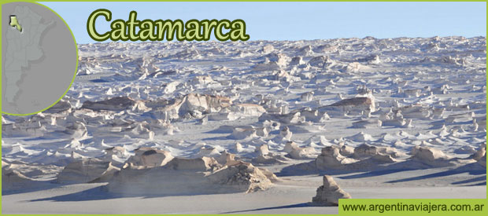
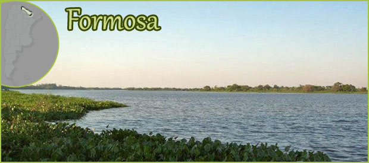
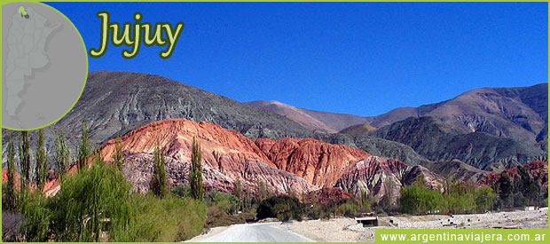
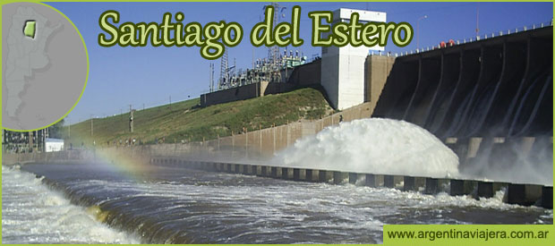

Principales Actividades Turísticas
Volver

Basílica Nuestra Señora del Valle
Termas de Fiambalá
Expedición a Volcán Incahuasi
Ruta del Vino

Parque Nacional Río Pilcomayo
Safari fotográfico en Laguna Oca
Turismo Acuático
Parque Nacional Laguna Blanca

San Salvador de Jujuy
Purmamarca
Humahuaca
La Quiaca

Termas de Río Hondo
Ciudad de Santiago del Estero
La Banda
Reserva Natural Tara Inti